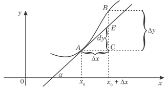

Differensial
dy = f '(x)∆x
Eger f(x) = x bolsa, onda:
dy = dx = x ∙ ∆x = 1 ∙ ∆x = ∆x,
ýagny argumentiň differensialy onuň ∆x artdyrmasyna deňdir:
dx = ∆x.
Şunlukda, differensirlenýän y = f(x) funksiýanyň differensialy şu aşakdaky formula bilen aňladylýandyr:
dy = f′(x)dx
Differensialyň geometrik manysy

f(x) funksiýanyň f ′(x)∆x differensialy şol egri çyzyga x0
nokatda geçirilen galtaşýan göni çyzygyň ordinatasynyň abssissa x0
nokatdan x0 + ∆x nokada geçendäki artdyrmasyna deňdir.Bu bolsa differensialyň geometriki manysydyr.
Differensiallary tapmagyň düzgünleri

Differensial deňleme barada düşünje.
x argumenti, y näbelli funksiýany we onuň önümlerini baglanyşdyrýan deňlemä differensial deňleme diýilýär:
g(x, y, y′, y′′, …) = 0
Differensial deňlemäniň çözüwi diýip şu differensial deňlemede goýlanda ony toždestwo öwürýän funksiýa aýdylýar.